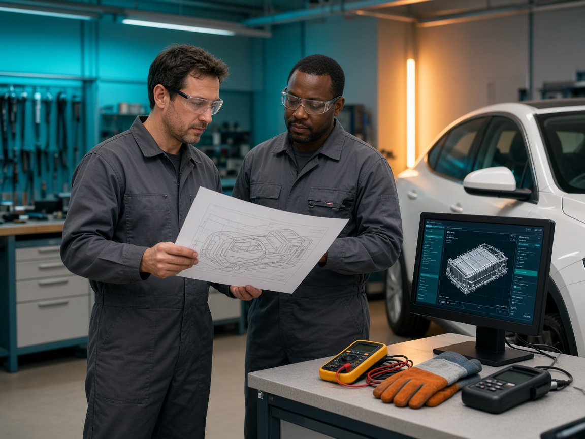
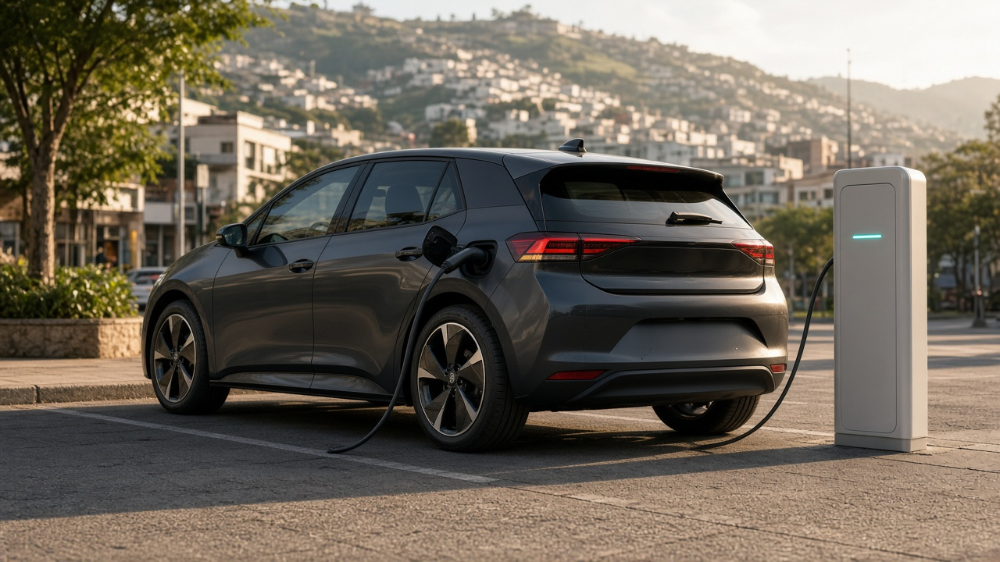

01
Ordenar el caso por el síntoma
Sesenta fallas ordenadas por síntoma, con semáforo de riesgo y la secuencia mirar, leer, medir y decidir.
Antes de abrir un híbrido o un eléctrico se aprende a leer
Lo que trabaja el curso
Cada punto sale del programa del curso. No es una lista de cargos ni una promesa de empleo.
Sesenta fallas ordenadas por síntoma, con semáforo de riesgo y la secuencia mirar, leer, medir y decidir.
Equipo de protección, desconexión, ausencia de tensión, bloqueo y el momento en que el caso se debe derivar. El manual del vehículo manda sobre el video y sobre la costumbre del taller.
Arquitectura del paquete, lectura con escáner y diferencia entre bloques, para no cambiar todo el conjunto por el título de un código.
Inversor, motores-generadores, convertidor de 12 V, aislamiento e interlock. Qué se puede leer y qué se deja quieto mientras los capacitores sigan cargados.
Multímetro de categoría adecuada, megóhmetro, escáner, pinza y datos en vivo. Medir de más, o con el equipo equivocado, se trata como un error, igual que adivinar.
Entrevista, inspección, datos en vivo, informe, cotización y constancia. Si hace falta, el vehículo se entrega a quien sí puede intervenirlo.
Contenido
El curso también incluye un compendio de normativa colombiana, una biblioteca de 21 documentos y una evaluación final.
Sesenta fallas ordenadas por síntoma, con semáforo de riesgo y la secuencia mirar, leer, medir y decidir.
Reconocer la alta tensión, equipo de protección, desconexión, ausencia de tensión, bloqueo y cuándo derivar.
Arquitectura del paquete, lectura con escáner, diferencia entre bloques y cuándo no se cambia todo.
Recorrido de la energía, inversor, motores-generadores, convertidor de 12 V, aislamiento e interlock.
Multímetro de categoría adecuada, megóhmetro, escáner, pinza y el puesto de trabajo por etapas.
Cómo carga el vehículo, conectores, señal piloto, cargador a bordo y fallas leídas por síntoma. Corriente alterna y corriente continua.
Batería auxiliar, puente seguro, freno regenerativo, dirección eléctrica y aire con compresor de alta tensión.
Veinte casos de estudio, leídos por síntoma, código, hallazgo y decisión. Son ejemplos ilustrativos: el manual del vehículo confirma.
Entrevista, inspección, orden, datos en vivo, informe, cotización, constancia y derivación.
Híbrido suave (MHEV), híbrido (HEV), enchufable (PHEV), eléctrico de batería (BEV) y autonomía extendida (REEV). También la red de 48 V y la idea de un transeje híbrido.
Compendio sobre vehículos eléctricos en Colombia: circulación, clasificación, carga, incentivos y enlaces a normas oficiales. Sirve para consultar; no reemplaza el texto vigente de cada norma.
Veintiún documentos para abrir o descargar, entre ellos fichas de rescate y manuales de consulta. Si el manual del vehículo que está en el taller dice otra cosa, manda ese manual.
El curso y las evaluaciones se hacen en el aula virtual. La final es una ruleta con 15 retos de los diez módulos. Hace falta aprobar cada clase para abrirla. Cada acierto suma 2 puntos y, con racha de 3 o más, se suman 3 puntos extra. La aprobación está en 22 puntos.
Participantes
El material está escrito para quien va a recibir o revisar un híbrido o un eléctrico y necesita un orden antes de medir: el síntoma, el semáforo y el límite de la intervención.
Sirve para separar tecnologías que no se diagnostican igual: híbrido suave, híbrido, enchufable, eléctrico de batería y autonomía extendida. También para quien quiere practicar la lectura de carga, batería auxiliar, freno regenerativo y climatización.
No hay requisitos de ingreso. Es un curso no formal: no se pide edad, título, licencia ni experiencia previa.

Inscripción
Virtual. El curso y las evaluaciones se hacen en el aula virtual. La APK es una aplicación offline para consultar el material en cualquier momento, incluso sin internet.
40 horas. El recorrido incluye las diez clases, la normativa, la biblioteca y la evaluación final.
$200.000
Pesos colombianos. Incluye el aula virtual, la APK offline y el certificado, que se entrega al pagar.
No hay una fecha de inicio. Las clases son virtuales y se gestionan de forma individual, no por cohortes.

Preguntas frecuentes
En los materiales se llama Mecánica básica de vehículos híbridos y eléctricos. Lo ofrece CEA SERVIAL COLOMBIA. Cubre eléctricos de batería e híbridos; no es solo uno de los dos.
El acceso al aula virtual, donde se hace el curso y las evaluaciones, y una APK offline para consultar el material en cualquier momento, incluso sin internet. Al pagar, el alumno recibe el certificado. El programa tiene diez clases, el compendio normativo, la biblioteca de 21 documentos y la evaluación final.
Dura 40 horas y es virtual. No hay fecha de inicio ni grupos: cada persona avanza por su cuenta. El curso y las evaluaciones se hacen en el aula; la APK sirve para consultar el material sin internet.
Sí. Al pagar, el alumno recibe el certificado. El curso y las evaluaciones se hacen en el aula virtual: cada clase cierra con quiz, escenario y reto, y la evaluación final es una ruleta de 15 retos que se aprueba con 22 puntos. Hace falta aprobar cada clase para abrirla.
No. El manual del fabricante manda sobre cualquier ejemplo, sobre el video y sobre la costumbre del taller. Los números que el curso llama “de estudio” no se le atribuyen a un auto real sin medir o sin leer la placa del equipo.
El instructor es del equipo de instructores de la institución CEA SERVIAL COLOMBIA.
WhatsApp y teléfono 321 303 9595. Calle 37B #19A-65, barrio Jordán, Villavicencio, Meta. Para pagar, regístrate en el aula virtual.
Compra
Modalidad virtual, 40 horas, $200.000. El pago se hace en el aula virtual, después de crear la cuenta. El curso y las evaluaciones se hacen ahí. La APK es offline, para consultar el material incluso sin internet. Al pagar, el alumno recibe el certificado. No hay cohorte ni fecha de inicio.
Calle 37B #19A-65, barrio Jordán, Villavicencio, Meta.